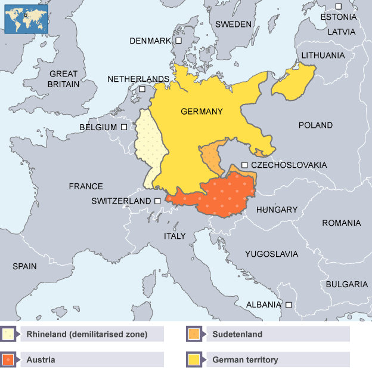

IB Docs (2) Team
IB Docs (2) Team

1.2 Expansión alemana (1933 - 1940)
 Los Enfoques del Aprendizaje en esta página abordan el papel Hitler y Alemania en el aumento de la tensión internacional en la década del 30 obliga a Gran Bretaña y Francia a declarar la guerra en septiembre de 1939.
Los Enfoques del Aprendizaje en esta página abordan el papel Hitler y Alemania en el aumento de la tensión internacional en la década del 30 obliga a Gran Bretaña y Francia a declarar la guerra en septiembre de 1939.
Preguntas orientadoras
¿Cuál fue el impacto de la Primera Guerra Mundial en los objetivos de la política exterior de Hitler?
¿Cómo desafió Hitler los acuerdos de posguerra? ¿Era un oportunista?
¿Cuál fue la respuesta internacional a las acciones de Hitler?
1: ¿Cuál fue el impacto de la Primera Guerra Mundial en los objetivos de la política exterior de Hitler?
Al igual que con Mussolini, es importante tener una idea clara del pensamiento de Hitler en los años 20. La Primera Guerra Mundial fue también una importante influencia aquí.
Actividad inicial
El Tratado de Versalles, "fracasó en resolver los problemas de castigar y componer a un país que seguía siendo una gran potencia a pesar de los cuatro años de lucha y su derrota militar... fue un paquete de compromisos que no satisfizo plenamente a ninguno de los pacificadores" (Zara Steiner, 2011)
Según Steiner, ¿cuáles eran los problemas del Tratado de Versalles?
Tarea Uno
Enfoques de Aprendizaje: Habilidades de investigación y pensamiento
Revise los términos del Tratado de Versalles:
- Diplomacia Abierta - No debe haber tratados secretos entre las potencias
- Libertad de Navegación - Los mares deben ser libres tanto en tiempos de paz como en la guerra
- Libre comercio - Las barreras al comercio entre países, como los derechos de aduana, deben ser eliminados
- Desarme multilateral - Todos los países deberían reducir sus fuerzas armadas al nivel más bajo posible
- Colonias – Las poblaciones de las colonias europeas debería tener voz y voto en su futuro
- Rusia - A Rusia se le debe permitir tener cualquier gobierno que quiera y ese gobierno debe ser aceptado, apoyado y acogido.
- Bélgica - Bélgica debe ser evacuada y restaurada a la situación anterior a la guerra.
- Francia - debería hacer que Alsacia-Lorena y cualquier tierra que se le haya quitado durante la guerra le sea restaurada.
- Italia - La frontera italiana debería ser reajustada de acuerdo con la nacionalidad
- Autodeterminación nacional - Los grupos nacionales en Europa deben, siempre que sea posible, recibir su independencia.
- Rumania, Montenegro y Serbia - Deberían ser evacuados y Serbia debería obtener una salida al mar
- Turquía - El pueblo de Turquía debe tener voz en su futuro
- Polonia - Polonia debería convertirse en un estado independiente con salida al mar.
- Liga de Naciones - Una asamblea de todas las naciones debería formarse para proteger la paz mundial en el futuro.
1. ¿Cuál de los términos del Tratado era más probable que enojara a los alemanes?
2. ¿En qué medida el Tratado realmente debilitó a Alemania? (Considera la observación del historiador Steiner, arriba, de que Alemania seguía siendo "una gran potencia"; ¿en qué se basa para emitir este juicio y cuáles son las implicaciones de ello?)
Para más discusión sobre el Tratado de Versalles, haga clic aquí: 3. La Primera Guerra Mundial: los efectos pregunto 4. ¿Fue el Tratado de Versalles un acuerdo justo y viable
Tarea dos
Enfoques de Aprendizaje: Habilidades de pensamiento
¿Qué puedes aprender de esta fuente sobre a) las opiniones de Hitler sobre el propósito del Tratado de Versalles b) los principales objetivos de la política exterior de Hitler en la década del 20
Mientras este Tratado siga en pie no puede haber resurrección del pueblo alemán; ¡no es posible ninguna reforma social de ningún tipo! El Tratado fue hecho para llevar a la muerte a 20 millones de alemanes y arruinar a la nación alemana. Pero aquellos que hicieron el Tratado no pueden dejarlo de lado. En su fundación, nuestro Movimiento formuló tres demandas:
1. Dejar de lado el Tratado de Paz
2. Unificación de todos los alemanes
3. Tierra y Suelo (Grund y Boden) para alimentar a nuestra nación
De un discurso de Hitler, 17 de abril de 1923
Tarea tres
Enfoques de Aprendizaje: Habilidades de investigación y pensamiento
Investiga más a fondo los puntos hechos por Hitler en su discurso. Identifica específicamente sus objetivos en los años 20 con respecto a:
- El Tratado de Versalles
- A Gross Deutschland (La Gran Alemania)
- La raza y el espacio vital
- Otros países europeos (¿quiénes eran "enemigos naturales" y quiénes "aliados naturales"?)
Tarea Cuatro
Enfoques de Aprendizaje: Habilidades de pensamiento
De a dos, consideren las similitudes que existían entre los objetivos de política exterior de Hitler y Mussolini en la década del 20.
Es importante seguir haciendo comparaciones entre los tres países en los que se centra tema. En la siguiente tabla se presenta una actividad de resumen de revisión de los acuerdos internacionales de la década del 20 que afectaron al Japón, Italia y Alemania.
Complete la tabla adjunta para resumir los acuerdos internacionales de los años 20.
 Tabla sobre los acuerdow internacionales en la década del 20
Tabla sobre los acuerdow internacionales en la década del 20
2: ¿Cómo desafió Hitler el acuerdo de posguerra? ¿Era un oportunista?
Actividad inicial: Vuelva a la foto en la parte superior de esta página que muestra a los alemanes étnicos en la ciudad de Eger saludando a Hitler después de que cruzara la frontera de los antiguos Sudetes checoslovacos el 3 de octubre de 1938.
¿Cuál es el mensaje de esta foto?
A partir de 1935, Hitler impugnó el Tratado de Versalles; después de la crisis de los Sudetes fue más allá de desafiar a Versalles para hacer nuevas reivindicaciones territoriales que prepararon el terreno para el conflicto con Gran Bretaña y Francia en septiembre de 1939.
Para más discusión y Enfoques de Aprendizaje sobre las acciones de la política exterior de Hitler en los años 30 visita esta página: 1. Segunda Guerra Mundial: Causas Parte I
Vea la página sobre 1.1 Expansión italiana (1933-1940) para un video sobre la participación de Hitler en la Guerra Civil Española y el aumento de la amistad entre Hitler y Mussolini, demostrado por el Eje Roma-Berlín y, más tarde, por el Pacto de Acero.
También ver 1. Segunda Guerra Mundial: Causas Parte I (Enfoques de Aprendizaje( para la discusión y Enfoques de Aprendizaje sobre el Pacto Nazi-Soviético.
Tarea Uno
Enfoques de Aprendizaje: Habilidades de pensamiento y de autogestión
Ve el video Road to War: Germany desde 15.28 minutos (Se puede encontrar en esta página: 2. La expansión alemana e italiana: Videos y actividades
Mientras ve el video anote las fechas acciones claves tomadas por Hitler para allanar el camino hacia la guerra (tanto dentro de Alemania como en el escenario internacional)
Crea una línea de tiempo para mostrar los eventos clave que llevaron a la guerra entre 1933 y 1939
Tarea dos
Enfoques de Aprendizaje: Habilidades de pensamiento
1. Consulta las fuentes sobre la ocupación nazi de Renania que se encuentran en los Archivos Nacionales acqui
2. Trabaja en las fuentes y las preguntas.
3. ¿Cuáles son tus conclusiones sobre la decisión de Gran Bretaña de no intervenir? ¿Qué factores influyeron en la decisión del gabinete.
4. ¿En qué medida está de acuerdo con el historiador Gordon A. Craig en que 'Con la [invasión de Renania]... Hitler había destruido efectivamente el sistema de seguridad posterior a la Primera Guerra Mundial'?
A finales de 1936, la posición internacional de Hitler se había fortalecido. Había tomado Renania sin oposición y la Guerra Civil Española había proporcionado más pruebas de que las potencias occidentales carecían de la voluntad de tomar medidas firmes. También había asegurado el Pacto Anti-Komintern con Japón y la economía alemana estaba ahora totalmente orientada hacia la guerra. El siguiente punto de inflexión en la política exterior de Hitler fue la Conferencia de Hossbach de noviembre de 1937. Este fue el punto en el que "la expansión del Tercer Reich se hizo más latente y se hizo explícita". (D G Williamson, 1995)
A esta conferencia asistieron los principales generales de Hitler y sus ministros de guerra. Hitler les dijo que lo que iba a decir debía ser considerado como "su última voluntad y testamento". El asistente militar de Hitler, el coronel Hossbach, levantó un acta de la reunión a partir de las notas que tomó en ese momento y el documento se archivó sin que Hitler lo viera. Los historiadores difieren en sus opiniones sobre el peso que se puede dar a este documento como prueba clara de las intenciones de Hitler.
Tarea Tres
Enfoques de Aprendizaje: Habilidades de pensamiento
El texto completo del Memorándum de Hossbach se puede encontrar aqui
1. Lean y trabaje de a dos para destacar los puntos clave que se hacen en el documento con respecto a:
- los objetivos de la política exterior alemana en este momento y las razones de estos objetivos
- los diferentes escenarios que Alemania podría enfrentar
- las inquietudes de algunos de los militares
2. Con referencia a su origen, propósito y contenido, juzgue los valores y limitaciones del Memorando de Hossbach como evidencia de los planes de política exterior de Hitler después de 1937.
3. Remítete a las ideas de política exterior de Hitler tal y como se expusieron en los años 20 en Mein Kampf (Mi Lucha). ¿Qué áreas de continuidad puede ver? ¿Hay algún cambio con respecto a sus puntos de vista originales?
Los líderes militares que habían dudado de los puntos de vista de Hitler fueron destituidos del poder en febrero de 1938 cuando Hitler se nombró a sí mismo Comandante Supremo del ejército alemán. Hitler entonces se movió para tomar el control de Austria (Anschluss). Como habrás visto en el vídeo y en la sección sobre Mussolini, Hitler pudo esta vez tomar Austria. Esto reforzó su posición estratégica en Europa, así como la percepción de Hitler de que el uso de la intimidación y la política de poder despiadada en el escenario internacional funcionaban.
Tarea Cuatro
Enfoques de Aprendizaje: Habilidades de pensamiento

De a dos, revisen los eventos que condujeron al Anschluss. Esta página de la BBC también ayudará.
Haga clic en el ojo para traducir.
Hitler quería que todas las naciones de habla alemana en Europa fueran parte de Alemania. Con este fin, tenía planes de unificar Alemania con su patria natal, Austria. Sin embargo, bajo los términos del Tratado de Versalles, se prohibió la unificación de Alemania y Austria.
Hitler también quería el control de la zona de habla alemana dentro de Checoslovaquia, llamada los Sudetes. Es importante señalar que Austria compartía una frontera con esta zona.
En su intento por alcanzar sus objetivos, Hitler estaba decidido a desestabilizar Austria y socavar su independencia. Su objetivo final era la Anschluss (unión) con Austria.
El golpe de estado fallido
El Canciller austríaco, Dollfuss, trató de reprimir a los socialistas y a los nazis, facciones políticas que creía que estaban destrozando el país. Dollfuss prohibió el partido nazi.
En 1934, Hitler ordenó a los nazis austriacos promover el caos en Austria. Esto se tornó un intento de derrocar al gobierno. El Canciller Dollfuss fue asesinado pero el intento de golpe de estado fracasó porque el ejército austriaco intervino para respaldar al gobierno.
En 1934, Italia tenía un acuerdo con Austria para protegerla de la agresión externa. El dictador italiano, Mussolini, cumplió el acuerdo y trasladó las tropas italianas a la frontera austriaca para disuadir a Hitler de la invasión.
Acontecimientos en Austria
El nuevo canciller austriaco, Schuschnigg intentó preservar el país de la invasión alemana tratando de no dar a Hitler una excusa para la agresión, cooperando con él tanto como fuera posible.
Schuschnigg firmó el acuerdo germano-austriaco de 1936. Aunque este pacto reconocía la independencia de Austria, su precio era que la política exterior de Austria tenía que ser coherente con la de Alemania. El acuerdo también habilitaba a los nazis ocupar puestos oficiales en Austria. Schuschnigg esperaba que esto aplacara a Hitler. Estaba equivocado.
La posición de Schuschnigg fue socavada en 1936 cuando Hitler y Mussolini formalizaron el Eje Roma-Berlín durante su participación conjunta en la Guerra Civil Española (1936-39). Con Alemania e Italia ahora como firmes aliados, Austria había perdido la protección de Italia y era vulnerable a los ataques alemanes.
En 1938, Schuschnigg visitó a Hitler en su retiro de verano en Berchtesgaden, cerca de la frontera austriaca. Hitler exigió que se les diera a los nazis puestos gubernamentales clave en Austria. Schuschnigg se comprometió a hacerlo y el miembro nazi, Seyss-Inquart, fue nombrado Ministro del Interior.
Hitler ordenó a los nazis austriacos crear tantos problemas y destrucción como fuera posible para presionar a Schuschnigg. Si Hitler podía alegar que la ley y el orden austriacos se habían roto, podía justificar la marcha de las tropas alemanas a Viena para restaurar la paz - a pesar de que era responsable del caos en primer lugar.
Cuatro días de marzo
Miércoles 9 de marzo de 1938
En un acto desesperado, Schuschnigg anunció un referéndum por el cual el pueblo austriaco decidiría por sí mismo si quería formar parte de la Alemania de Hitler. Hitler estaba furioso. Si los austriacos votaban en contra de unirse a Alemania su excusa para la invasión se arruinaría.
Jueves 10 de marzo de 1938
Hitler les dijo a sus generales que se prepararan para la invasión de Austria. Ordenó a Schuschnigg que cancelara el referéndum. Sabiendo que no recibiría ayuda de Italia, y que Francia y Gran Bretaña no interferirían en los planes de Hitler, Schuschnigg concedió. Canceló el referéndum y renunció.
El Ministro del Interior austriaco nazi, Seyss-Inquart, recibió la orden de Hitler de solicitar ayuda alemana para restaurar el orden en Austria.
Viernes 11 de marzo de 1938
Hitler aseguró a Checoslovaquia que no tenía nada que temer.
Sábado 12 de marzo de 1938
Las tropas alemanas entraron a Austria sin oposición. Hitler tenía ahora el control de Austria. Un mes después, Hitler celebró un referéndum que no fue limpio. Los resultados decían que el pueblo austriaco aprobaba el control alemán de su país.
La reacción extranjera
Francia
La política francesa estaba convulsionada en marzo de 1938. De hecho, dos días antes de que Alemania invadiera Austria, todo el gobierno francés había renunciado. Francia no estaba en posición de oponerse a la invasión.
Gran Bretaña
En marzo de 1938, Gran Bretaña tenía sus propios problemas políticos. Anthony Eden, el Secretario de Relaciones Exteriores, había renunciado por oponerse a la decisión del Primer Ministro Neville Chamberlain de abrir negociaciones con el dictador fascista de Italia, Mussolini. Con Chamberlain decidido a apaciguar a Hitler, no había voluntad política de oponerse a Alemania.
Además, la población británica estaba en contra de la idea de otra guerra europea. El Anschluss no era visto como una amenaza para Gran Bretaña y, como ambas naciones eran germanoparlantes, se tenía la sensación de que no había una buena razón para que Austria y Alemania no se unieran.
Quienes se oponían al apaciguamiento, como Winston Churchill, estaban alarmados por la anexión de Austria por parte de Alemania. Creían que si Hitler tenía un verdadero derecho sobre Austria, debería haber usado la negociación y la diplomacia en lugar de la fuerza.
Resultados
- Alemania añadió siete millones de personas e incrementó su ejército en 100.000 hombres.
- Alemania obtuvo recursos útiles como acero y hierro y, también, las reservas de divisas de Austria.
- El equilibrio de poder en Europa sudoriental se inclinó a favor de Alemania, aumentando su influencia en los Balcanes.
- Checoslovaquia estaba ahora rodeada en tres frentes por Alemania.
¿Hasta qué punto estás de acuerdo con la opinión de Alan Bullock de que Anschluss es un "ejemplo llamativo" de la capacidad de Hitler para combinar "la consistencia en los objetivos, el cálculo y la paciencia en la preparación con el oportunismo, el impulso y la improvisación en la ejecución".
Tras haber logrado la anexión de Austria, Hitler dirigió su atención al Estado de Checoslovaquia, creado por el Tratado de Versalles en 1919. Había varias razones para ello:
- Hitler consideraba que los eslavos eran racial y socialmente inferiores (untermenschen)
- Checoslovaquia era un estado de personas étnicamente diversas que vivían juntas con éxito. También era un entusiasta partidario de la Sociedad de Naciones y tenía alianzas con Francia y la Unión Soviética.
- Alemanes del antiguo Imperio Austrohúngaro vivían en una zona conocida como los Sudetes que limitaba con Alemania
Tarea cinco
Enfoques de Aprendizaje:Habilidades de investigación y pensamiento
Investiga y toma notas sobre la crisis de los Sudetes.
Incluye
- La importancia de los Sudetes para Alemania
- Las acciones de los alemanes de los Sudetes, incluyendo las de su líder Konrad Heinlein
- La crisis de mayo y su impacto
- Las acciones del presidente checo Edvard Beneš
Tarea Seis
Enfoques de Aprendizaje: Autogestión y habilidades de pensamiento
Usando la información del video y sus notas de la tarea anterior, complete la siguiente tabla.
De a dos, discuta hasta qué punto cada uno de los eventos de la tabla fortaleció la posición de Hitler con respecto a una futura guerra
 Cuadricula sobre la politica exterior de Hitler
Cuadricula sobre la politica exterior de Hitler
3. ¿Cuál fue la respuesta internacional a las acciones de Hitler?
Tarea Uno
Enfoques de Aprendizaje: Habilidades de pensamiento y autogestión
Ve a la 1. De Versalles a Berlín: Diplomacia en Europa (Enfoques de aprendizaje) y las preguntas guía 6, 8 y 9. Estas cubren los motivos de las acciones de Gran Bretaña y Francia y el impacto de sus acciones. También hay preguntas de origen sobre el Acuerdo de Munich.
También ve los videos sobre el apaciguamiento que están en la página de video: 2. La expansión alemana e italiana: Videos y actividades
Después de ver los videos, haz una lista de argumentos a favor y en contra de la política de apaciguamiento.
Tarea dos
Enfoques de Aprendizaje: Habilidades de pensamiento y comunicación
Dividan la clase en dos grupos. Un lado defenderá la moción de abajo. El otro lado argumentará en contra de la moción
Las instrucciones para el debate son las siguientes:
Debe haber tres oradores por cada lado.
El primer orador debe exponer los principales argumentos que su equipo presentará y dar algunas pruebas de al menos dos de estos argumentos.
El segundo orador debe responder a los puntos planteados por el primer orador de la otra parte y luego pasar a desarrollar al menos dos puntos más.
Después de que los dos primeros oradores de cada lado hayan hablado, el debate debe abrirse a las preguntas del público y cualquier alumno que no haya dado un discurso debe hacer una pregunta.
Finalmente, el último orador de cada lado debe hablar. Deberán abordar las preguntas que se hayan planteado desde la sala y refutar los argumentos de la otra parte. Deberán resumir los puntos clave de su equipo de nuevo.
Tengan en cuenta que su profesor decidirá qué lado gana y se darán puntos por argumentos válidos respaldados con pruebas precisas. También se dará crédito por utilizar las opiniones de los historiadores para apoyar sus puntos, así como responder a los argumentos del equipo contrario y a las preguntas de la sala.
 Twitter
Twitter
 Facebook
Facebook
 LinkedIn
LinkedIn